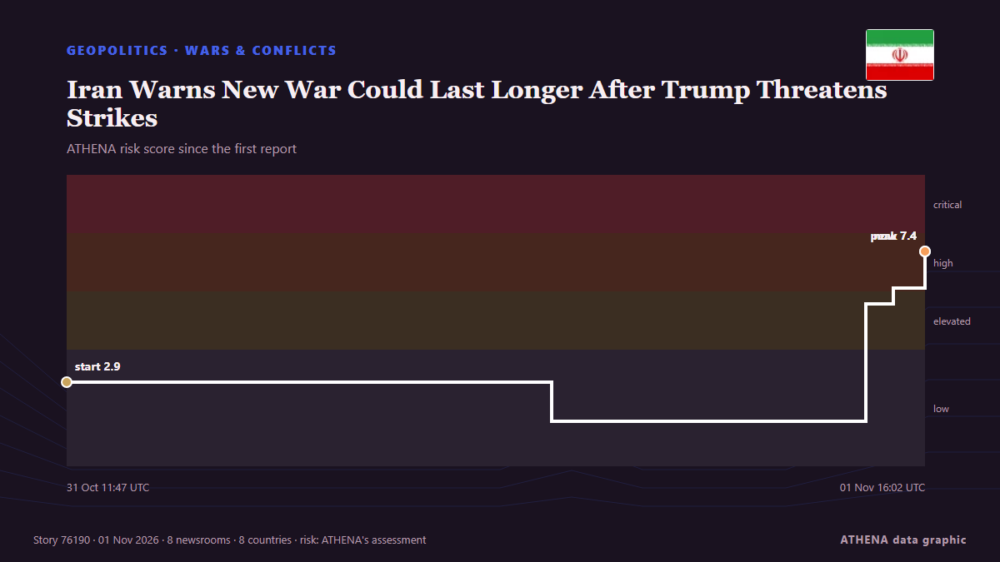

Iran Warns New War Could Last Longer After Trump Threatens Strikes

Diplomatic efforts to end the Middle East war have been punctuated by repeated threats from the United States and Israel to resume bombardments as they hold crucial elections. من Channels TV
نشرته بشكل مستقل 17 مصدرًا في 13 دولة منذ 31 أكتوبر، وأول من نشره The Straits Times؛ والتغطية لا تزال تتسع. يقدّر ATHENA الخطر بأنه مرتفع (7.0/10)، ويعود ذلك أساسًا إلى خطورة الضرر الموصوف ووتيرة التغطية، مقارنة بـ1.6 قبل 24 ساعة. الثقة 92٪ (مرتفعة)، وعدد المصادر المستقلة المؤكِّدة: 17، بمتوسط موثوقية للمصادر يبلغ 76٪. وسائل الإعلام حسب البلد: سنغافورة (2), نيجيريا (2), المملكة العربية السعودية (2). التغطية: من 31 أكتوبر إلى 2 نوفمبر، 37 ساعة.
لماذا يهم: قد تغيّر التطورات الأمنية والدبلوماسية التحالفات والتجارة والأسواق إلى ما هو أبعد بكثير من الدول المعنية مباشرة.
ما الذي تغيّر: 14 تقارير جديدة من 14 غرف أخبار خلال 24 ساعة حتى 2 نوفمبر.
العنوان الأول: Iran warns fresh US strikes would unleash ‘flames of war’ far beyond current conflict
تُعرض العناوين بالإنجليزية كما نُشرت.
نظرة سريعة
اختير وقُيِّم وكُتب وفق منهجية ATHENA المنشورة. لا يتدخل أي محرر في الأحداث بعينها. كيف يُنتَج ›
| 31 Oct 11:01 UTC | 1 |
|---|---|
| 31 Oct 13:01 UTC | 0 |
| 31 Oct 15:01 UTC | 0 |
| 31 Oct 17:01 UTC | 0 |
| 31 Oct 19:01 UTC | 0 |
| 31 Oct 21:01 UTC | 0 |
| 31 Oct 23:01 UTC | 0 |
| 01 Nov 01:01 UTC | 0 |
| 01 Nov 03:01 UTC | 1 |
| 01 Nov 05:01 UTC | 0 |
| 01 Nov 07:01 UTC | 0 |
| 01 Nov 09:01 UTC | 0 |
| 01 Nov 11:01 UTC | 1 |
| 01 Nov 13:01 UTC | 2 |
| 01 Nov 15:01 UTC | 2 |
| 01 Nov 17:01 UTC | 0 |
| 01 Nov 19:01 UTC | 2 |
| 01 Nov 21:01 UTC | 4 |
| 01 Nov 23:01 UTC | 2 |
| 31 Oct 11:47 UTC | 2.9 |
|---|---|
| 01 Nov 03:44 UTC | 1.6 |
| 01 Nov 14:05 UTC | 5.6 |
| 01 Nov 14:59 UTC | 6.1 |
| 01 Nov 16:02 UTC | 7.4 |
| 02 Nov 00:13 UTC | 7.0 |
لماذا هذه الأرقام
الأهمية
الخطر
الثقة
التغطية — من نشر الخبر ومتى
العنوان كما نُشر · يفتح الأصل- The Straits Times · سنغافورةFresh US strikes will unleash ‘geographically unrestricted response’, Iran’s supreme leader warns
- Al Jazeera English · قطرWhat we know about latest efforts to end US war on Iran
- Oman Observer · عُمانIran warns of new war after Trump threatens strikes
- Channels TV · نيجيرياIran Warns New War Could Last Longer After Trump Threatens Strikes
- Hespress English · المغربIran warns new war could last longer after Trump threatens strikes
- IOL · جنوب أفريقياIran warns next war with US could be longer as Trump threatens further strikes
- Kurdistan24 (English) · العراقIran Warns of Longer War with US as Gulf States Brace for Renewed Escalation
- Arab News · المملكة العربية السعوديةTrump holds call with Netanyahu over state of Iran war: report
- Asharq Al-Awsat (English) · المملكة العربية السعوديةTrump Reportedly Holds Call with Netanyahu Over State of Iran War
- The New Arab · INTIran warns new war could last longer as Trump threatens strikes
- Punch · نيجيرياRenewed war with US could be longer — Iran
- New Straits Times · ماليزياIran warns US of prolonged war as Trump threatens new strikes
- The Straits Times · سنغافورةTrump holds call with Netanyahu over state of Iran war: Report
- Bangkok Post — page reader · تايلاندIran warns new war could last longer after Trump threatens strikes
- RTÉ News · أيرلنداIran warns of 'longer' war after Trump threatens strikes